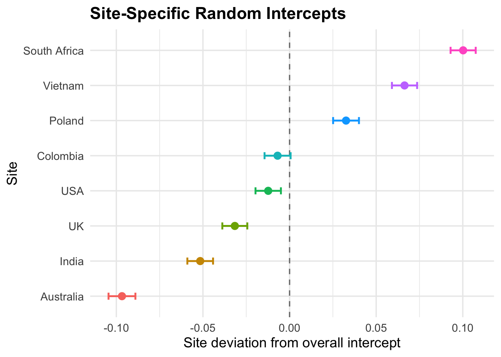

Presenting our results in a way that others can understand is important to help us interpret the results.
For this chapter we will need the following R packages: dplyrtidyrlme4ggplot2tidyversebroom.mixed
Note: Only install these if you have not already, otherwise go straight to library()
Random intercept model
Let’s first assume, we are interested in the overall slope of the relationship between exposure level and lung function (FEV1/FVC).We can check the predicted coefficients.
Warning: `geom_errobarh()` was deprecated in ggplot2 4.0.0.
ℹ Please use the `orientation` argument of `geom_errorbar()` instead.

In this plot we can see that the estimated random intercepts from the mixed model, which represent how each site differs from the overall baseline level of FEV1/FVC. Sites with positive values start higher than the mean, while those with negative values start lower. The confidence intervals show the precision of each estimate.
Together, these results show that baseline lung function varies substantially across sites, supporting the use of a random-intercept structure in the model.
Interpretation of the mixed-model results
Type
Term
Estimate
Std. Error
t value
Random
Intercept
0.0642
NA
NA
Random
Observation
0.0501
NA
NA
Fixed
(Intercept)
0.8427
0.0247
34.1780
Fixed
High exposure (vs low exposure)
-0.1413
0.0028
-49.8576
Fixed
Previous smoker (vs never smoker)
-0.0239
0.0035
-6.7617
Fixed
Current smoker (vs never smoker)
-0.0284
0.0036
-7.7856
Fixed
Age
-0.0014
0.0001
-19.8457
Fixed
Male (vs female)
0.0009
0.0027
0.3312
Fixed
BMI
0.0001
0.0003
0.3976
Fixed effects
High vs low exposure: Individuals in the low exposure group have, on average, 0.141 higher FEV1/FVC than those in the high exposure group (when accounting for smoking, age, sex, BMI).
This is a highly precise effect (t ≈ 50).
Smoking status:
Previous smokers have a 0.0239 lower FEV1/FVC compared to never smokers.
Current smokers have a 0.0284 lower FEV1/FVC ration compared to never smokers.
Age:
FEV1/FVC decreases by 0.00136 per year of age, showing a clear age-related decline
Sex and BMI:
Both effects are small and not statistically significant in this model.
Random effects (site-level variation)
Sites differ in their baseline FEV1/FVC by an SD of 0.064, which is larger than the residual SD (0.050).
This means between-site differences are real.
The caterpillar plot shows that some sites start well above the overall mean and some below, validating the need for a random intercept by site.
Model fit & implications
The difference between site-level variance and residual variance indicates that a mixed model is appropriate, since ignoring site would incorrectly pool together populations with different baseline lung function.
The exposure effect (low vs high) is consistent across sites because your model uses random intercepts only and the plot confirms that the baseline varies, but the exposure slope does not.